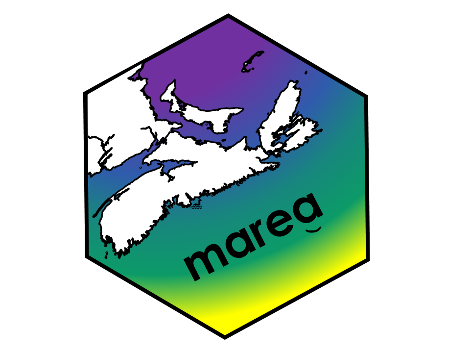
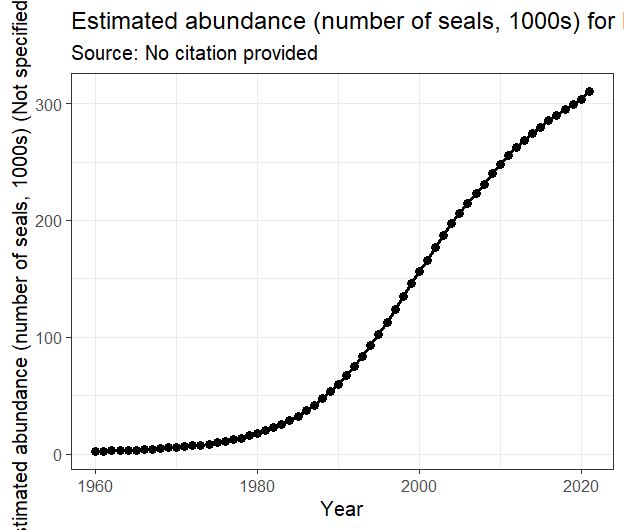
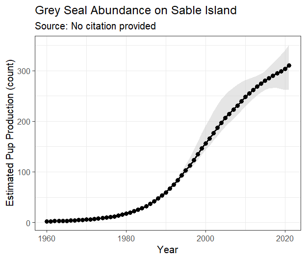

marea provides curated data sets to support an Ecosystem Approach to Fisheries Management (EAFM) in Canada’s Maritimes Region. It offers standardized, analysis-ready time series of oceanographic, environmental, and biological data crucial for research and stock assessment.
Philosophy
-
A Single, Simple Data Structure: All time series data in
mareaare stored in simple and robusteaclass objects. This provides a consistent, predictable format, whether you are working with temperature, survey indices, or commercial catch. -
User-Controlled Plotting: We provide a basic, clean plot for every dataset. From there, you are in control. Because our plots are standard
ggplot2objects, you can easily customize them, add new layers, and create the exact visualization you need for your analysis or report.
Installation
You can install the development version of marea from GitHub:
# install.packages("remotes")
remotes::install_github("MarEcosystemApproaches/marea")For users on the DFO network who may experience connection timeouts:
# Set a longer timeout period
options(timeout = 1200)
remotes::install_github("MarEcosystemApproaches/marea")Quick Start: A Simple Workflow
The workflow for any dataset in marea is the same: load, inspect, plot, and customize.
library(ggplot2) # For customization
# 1. Load a dataset of interest (e.g., grey seal abundance)
data("grey_seals")
# 2. Inspect the object - it's a clean 'ea_data' object
ea.print(grey_seals)## --- Ecosystem Approach (EA) Data Object ---
## Class: ea_data
## Data Type: Grey Seal Abundance
## Species: grey seal
## Location: ( Scotian Shelf Region )
## Time Range: 1960 - 2021
## Units: number of seals
## --------------------------------------------
## Data Preview:
## year low median_value high
## 1 1960 1.652570 1.860824 2.396134
## 2 1961 2.032521 2.263192 2.809171
## 3 1962 2.407304 2.659018 3.214911
## 4 1963 2.700793 2.972982 3.541202
## 5 1964 2.785795 3.088971 3.684344
## 6 1965 3.126289 3.449040 4.053713
# 3. Create a simple plot
p <- plot(grey_seals)
You can use the style argument to create a default whichis an appropriate base for your data, then customize it even further by chaining on ggplot graphics grammar.
# 4. Customize it! Add a confidence ribbon and improve the labels.
# The 'low' and 'high' columns are right there in the data frame.
custom_plot <- plot(grey_seals, style = 'ribbon') +
labs(
title = "Grey Seal Abundance on Sable Island",
y = "Estimated Pup Production (count)"
) +
theme_bw()
Available Data
marea includes a growing list of curated data products. Use marea_metadata() to see what’s available.
| Dataset | Region | TimeSpan | Source |
|---|---|---|---|
| amo | Northern Hemisphere (0-60N) | 1854-2025 | NOAA , https://www1.ncdc.noaa.gov/pub/data/cmb/ersst/v5/index/ersst.v5.amo.dat |
| ao | Northern Hemisphere | 1950-2025 | NOAA CPC, https://www.cpc.ncep.noaa.gov/products/precip/CWlink/daily_ao_index/ |
| azmp_bottom_temperature | Scotian Shelf (4X, 4V, 4W) | 1950-2024 | DFO Atlantic Zone Monitoring Program via azmpdata |
| coastline | Unknown | Unknown | Unknown |
| eco_indicators | Maritimes | 1970-2022 | Bundy et al. 2017 |
| food_habits | Not specified | 1995-2016 | pacea object |
| glorys_bottom_temperature | Northwest Atlantic | Unknown | CMEMS Global Ocean Physics Reanalysis |
| grey_seals | Scotian Shelf | 1960-2021 | den Heyer, C. E., Mosnier, A., Stenson, G. B., Lidgard, D. C., Bowen, W. D., & Hammill, M. O. (2024). Grey seal pup production in Canada (DFO Can. Sci. Advis. Sec. Res. Doc. 2023/078). Fisheries and Oceans Canada, Canadian Science Advisory Secretariat. |
| grey_seals_2021 | Maritimes | 1960-2021 | No citation provided |
| mei | Equatorial Pacific | 1979-2025 | NOAA ESRL/PSL, https://psl.noaa.gov/enso/mei/ |
| nao | North Atlantic | 1951-2024 | NOAA NCEP via azmpdata; https://www.ncei.noaa.gov/access/monitoring/nao/ |
| npgo | North Pacific Gyre | 1950-2025 | Di Lorenzo et al., http://www.o3d.org/npgo/ |
| oni | Niño 3.4 Region (Pacific) | 1950-2025 | NOAA CPC, https://www.cpc.ncep.noaa.gov/products/analysis_monitoring/ensostuff/ensoyears.shtml |
| pdo | North Pacific | 1854-2025 | NOAA ERSST, https://www.ncei.noaa.gov/access/monitoring/pdo/ |
| soi | Equatorial Pacific | 1951-2025 | NOAA CPC, https://www.cpc.ncep.noaa.gov/data/indices/soi |
Documentation
For detailed examples, data sources, and methodologies, please see our vignettes:
Understanding Generic EA Data Classes: A guide to the ea classes and the package philosophy.
Plotting EA Classes: Examples and details of how to plot ea class objects.
Citation
If you use marea in a publication, please cite it. You can get the current citation information by running:
citation("marea")Contributing
We welcome contributions! If you have suggestions, find a bug, or would like to contribute a new dataset, please see our contribution guidelines and open an issue on GitHub.
Related Work
This package is part of a coordinated effort across DFO regions to standardize access to ecosystem data for fisheries management:
pacea - Pacific ecosystem data
gslea - Gulf of St. Lawrence ecosystem data
Acknowledgments
We acknowledge that this work is done in the traditional and unceded territory of indigenous people who have cared for this land and water for time immemorial. We thank Fisheries and Oceans Canada for funding and acknowledge the many data providers and scientists whose work makes this package possible.
Special thanks to the oce package team for inspiring the design of the ea class system.
Kelley D, Richards C (2025). oce: Analysis of Oceanographic Data. R package version 1.8-4, https://dankelley.github.io/oce/.